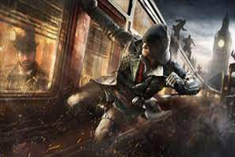
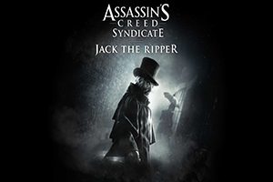

When Assassin’s Creed Syndicate launched in 2015, it transported players to the grimy, industrial streets of Victorian London. With its dynamic duo of protagonists, Jacob and Evie Frye, the game offered a thrilling mix of historical intrigue and fast-paced stealth action. However, despite its engaging world, Syndicate was long plagued by performance limitations, particularly on console. Now, with a 60 FPS update, the game has received a much-needed refresh, breathing new life into its open-world experience.

For fans of the series and newcomers alike, this update offers a smoother and more immersive way to explore the dark alleys and bustling streets of 19th-century London. But how much of a difference does it really make? Let’s take a closer look.
The Impact of 60 FPS on Gameplay: One of the most immediate benefits of this update is the vastly improved responsiveness of combat and traversal. Assassin’s Creed Syndicate relied heavily on free-flowing parkour and melee combat, both of which feel significantly better at higher frame rates. Animations are smoother, and inputs feel more precise, making it easier to chain attacks and navigate the city with agility.
Combat, which could sometimes feel sluggish at 30 FPS, now flows much more naturally. Evading enemy strikes and delivering counterattacks feels far more fluid, giving players greater control over both Jacob and Evie’s unique fighting styles.
Exploring Victorian London Like Never Before: The game’s open-world design truly shines at 60 FPS. Syndicate’s rendition of London is a sprawling and detailed environment, filled with smoke-covered rooftops, crowded marketplaces, and dimly lit alleyways. With the update, the city feels more alive than ever, with NPC movements, carriage chases, and street fights all benefiting from the smoother frame rate.
One of the most overlooked aspects of Syndicate was its dynamic rope launcher system, which allowed players to scale buildings and zip between rooftops with ease. This traversal mechanic now feels more natural and responsive, making navigating the city a seamless and exhilarating experience.
Graphical Enhancements & Performance Stability: While the update primarily focuses on frame rate improvements, players have also reported better overall stability and reduced screen tearing. The game’s lighting and shadows still hold up well in 2025, with the industrial atmosphere of London looking just as moody and immersive as it did at launch.

Although Syndicate may not boast the ultra-detailed visuals of newer Assassin’s Creed entries, its art direction and historical accuracy remain standout features.
How This Changes the Experience for Returning Players: For those who previously played Syndicate on older consoles, this update might be the perfect excuse for a replay. Missions that once felt sluggish now run far more smoothly, making even the most chaotic fights and high-speed carriage chases more enjoyable. The added performance boost also enhances stealth gameplay, making sneaky assassinations and rooftop getaways feel more precise.
For first-time players, this is the definitive way to experience Assassin’s Creed Syndicate. The game’s strong narrative, engaging characters, and unique dual-protagonist system remain as compelling as ever. The added fluidity provided by 60 FPS ensures that the pacing and action feel more in line with modern gaming standards.
Final Verdict: The Assassin’s Creed Syndicate 60 FPS update is a game-changer for one of the franchise’s most underappreciated entries. While it may not introduce new content, the vastly improved performance makes a world of difference, allowing players to fully appreciate the game’s combat, parkour, and world-building without technical hindrances.
Whether you’re returning to the streets of Victorian London or stepping into Jacob and Evie’s adventure for the first time, there has never been a better time to experience Assassin’s Creed Syndicate. The 60 FPS boost transforms the game into a far more polished and immersive experience, proving that even older titles can feel fresh with the right updates.